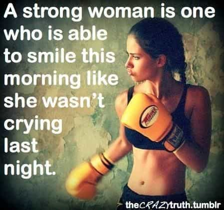
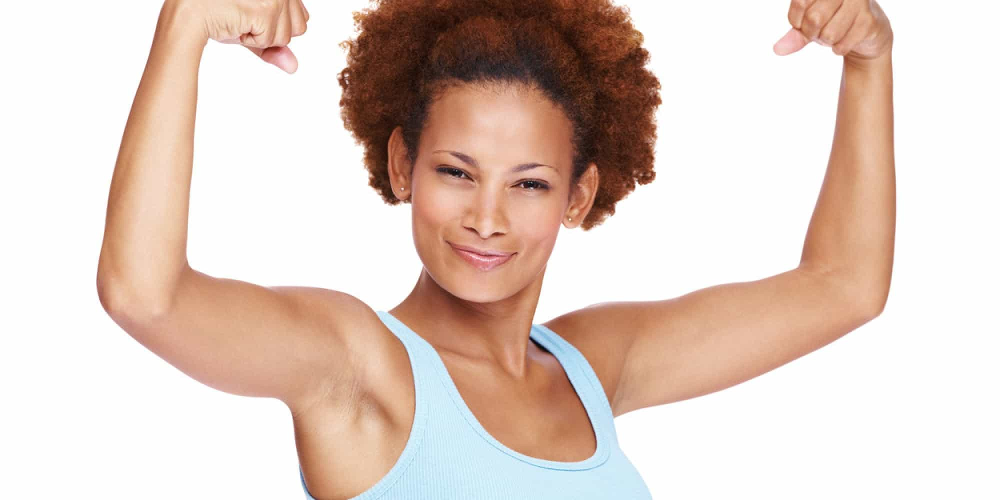
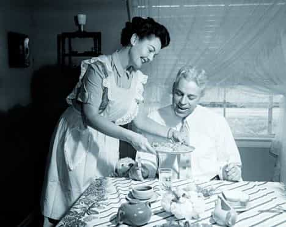

< < < Back
American Women Are Only Good For One Thing – Return Of Kings
Let me get right to the point: American women are good for one thing and one thing only:
Sex.
Try as I might to hamster something into existence that stateside girls can provide me that I can’t provide for myself outside of a warm, moist hole to stick my dick in, I just can’t think of anything.
The hard truth is that the “anything you can do I can do better” mantra today’s women squawk about is grossly inaccurate and they all know it. Men are better than women at just about everything and no amount of social reconditioning or media brainwashing is going to change that.

Of course you can sweetie
Let’s take a look at two things women should be better at than we are, two “qualities” women claim to have that men allegedly just can’t live without, and why we don’t need Western females for any of them.
What women should be superior to men at
Cooking and other household chores
Back in the day, men didn’t cook because women stayed home and took care of the kids while he worked on the railroad all the live long day. When his day was done, he’d be treated to well-earned home cooked meal prepared by his wife.
Things couldn’t be more different in 2015. The only two people I know who cook better than I do is my brother, who is a professional chef in Atlanta, and my mother who taught me to cook because she knew that culinary agency among females was plummeting quickly as she often verbalized as much while instructing me. Fucking pathetic.
The fact is I don’t need a woman to cook for me because I can do it myself. Don’t get me wrong, I would certainly like for a woman to cook for me because nothing’s sexier than an attractive woman slaving over a stove for her man. But if she can’t or won’t, I’d be just fine.

That’s what I’m talkin’ about
Cooking is something women could be better at than men, but because they have no interest in expanding their value outside of their sexual allure, men have become the undisputed kings of the kitchen and the margin continues to widen by the day.
Don’t believe me? The biggest, most watched, and most profitable cooking shows and competitions on televisions are hosted and run by men. Gordon Ramsay, Wolfgang Puck, Guy Fieri, Anthony Bourdain, Emeril Legasse (the list goes on and on) currently occupy majority of the cooking show market share.
Today’s woman would choose the “Kardashian/Jenner/Housewives of whatever city” route if given their choice of television shows to star in. They’re not interested in much other than shopping, riding the carousel, or bitching about how they can’t get a wi-fi signal at whatever overpriced coffee shop they’re at. Incidentally enough, they own the majority of the television market share on these subject matters.
“You continue to prove women can’t cook you donkey!”
In the same vein, we certainly don’t need women for other household duties such as laundry, ironing, and other domestic chores around the house. Again, these are tasks women used to do for their men on a regular basis, but these days chicks barely know how to iron or properly steam a dress shirt.
At this point it’s safe (and sad) to say that men are better than women in this area, effectively eliminating a man’s need for a woman to cook and clean for him.
Child Rearing
Women seem to have this crazy idea that because the court system’s default setting is to award custody to the mother 85% of the time means that they’re better parents.
This of course, is laugh out loud funny because everyone knows girls raised by single mothers usually end up as mentally ill sluts, and boys raised by single moms are much more likely run into trouble with the law.
Moms pay more attention to their phones than their children
On the flip side, it’s common knowledge that girls raised without fathers (or bad ones) are far more promiscuous than girls raised with them (hence the term “daddy issues”) and boys raised by a strong male figure are exponentially more successful in every aspect of life.

What’s more is that men are much better with money making single father homes more stable. As the more responsible sex, a man will pass his financial shrewdness to his children, whereas a woman who buys the hot new iPhone rather than pay the electric bill will undoubtedly influence the future spending habits of her young.
Obviously the ideal situation is for children to be raised in a two-parent, heterosexual household with the father acting as the disciplinarian and the mother as the nurturer. But the steep decline in traditional nuclear families is producing selfish, low quality females who have absolutely no clue about what it takes to raise children.
A couple years ago I saw a mother with her eyes glued to her phone while her daughter tugged at her pants to get her attention. I realized right then and there that just about every woman I knew or had known who was a single mother was a bad and selfish parent. The ones who weren’t were doing just enough to not be considered terrible.
An extreme example of a terrible mother
Shortly after moving west I became friends with a woman at work. Over the next few months here’s what I learned about her: She’d been pregnant three times. She aborted the first one and lost custody of the second one after getting popped for drugs. She was able to hang onto kid number three, but he’s a five-year-old boy who is attention starved because he misses his absentee father, and has been kicked out of numerous day cares for extremely disturbing behavior (even by today’s standards). He will most assuredly end up in prison not long after he turns 18 (I joke with her all the time telling her things like “get that bail money ready!”).

Believe it or not, he’s much worse than this kid
To top it off she’s pregnant again. But here’s the kicker: the father could be one of three different dudes and she’s already decided to get an abortion.
This woman just turned 30 and still has the stones to believe she deserves a good man.
Now this is an extreme example but I’m willing to bet stories like these are becoming increasingly common in today’s debaucherous sexual climate. All of that said, it’s safe to say that men no longer need women for their deplorable parenting skills taking, yet, another made up merit badge off their sashes.
Made up qualities women think men want
Strength
The definition of a “strong woman” varies from person to person but in 2015 a strong woman is basically a female who runs off at the mouth, posts memes about how strong she is as a woman, and has a jaded disposition—a direct result of being fucked and chucked on the regular.

She was likely crying because she found out she was the side piece instead of the main chick. Story of her life.
Women are mentally fragile. If someone hurts her feelings, she either cries or has a breakdown on the spot. And of course they’re the smaller, weaker sex. Any “strength” they have is because of their ability to quickly recruit white knights to defend them.
Even if women had the strength they pretend to have, it’s not what men are looking for. Girls don’t want weak men so what makes them think we want “strong” women?
As men, we have all the physical strength and cerebral brawn we need (more on this in a bit). We want women who add to our lives and bring something to the table we don’t currently have. We don’t want or need a surplus of a fraudulent commodity women claim to have that turns out to be more of a headache than an asset—especially when they’re trying to prove it to you, themselves, and everyone around them all the time.

No thanks hun…I’m good
Men want a woman’s support, deference, and sexual loyalty—not her “strength.”
“Oooohhhh you just can’t handle a strong woman can you??”
Actually I manhandle them…and never call them again. But don’t worry, they’re “strong” enough to move on from getting humped and dumped by assholes like me which will free her up to find a man who will appreciate her “inner strength.”
Intelligence
Men are smarter than women. Period.
Feminists are always quick to point out that females outperform males from elementary school all the way up through college, but they haven’t seemed to realize that the worlds best engineers, surgeons, scientists, etc. are men. This explains why they’re herding females by the truckload toward STEM careers.
What’s more is that the educational system is stacked against boys and skewed heavily in favor of girls. Girls excel in cushy classrooms while boys learn much better getting their hands dirty, turning a wrench, or getting under the hood.
It’s all fine and dandy until she gets out into the real world and realizes that her “A” in algebra doesn’t mean shit
After hours of sitting on his hands in a classroom, a boy gets restless. When that happens, he’s drugged to the point of being a zombie, which further puts him behind. If he manages to somehow escape the American educational abyss, his only shot at success at that point is to go to vocational school where he’ll actually learn something that will provide him with a comfortable lifestyle.
This isn’t to say that women don’t have some semblance of intelligence. Women are born with razor sharp instincts that are, at times, far superior to men. They thrive in social and hierarchical environments as a matter of survival. Women’s intuition.
If they loved and supported a man who respected her proven ability to read people, the man would stand to benefit in several different ways. But the idea that a man needs today’s woman because she’s smarter than he is or that she represents some sort of unfair advantage merely because of her very presence is silly.
Women are fed the ridiculous proverb that behind every great man is a great woman from birth. The ironic satire is that they’re too stupid to realize it isn’t true.
“Smart” women almost always end up like this….alone
Other than hiring a female divorce attorney (which is an advantage for obvious reasons), men don’t need women because of their smarts. In fact, a woman can be as dumb as a box of fucking rocks but if she’s attractive, kind, feminine, and submissive I’d bet the farm that no less than 10 out of 10 men would choose her over the ambitious super slut with her Master’s Degree sleeping her way up the corporate ladder.
“Intelligent” women don’t intimidate us…they fucking annoy us.
So…what are you sayin’?
I didn’t stutter.
American women are only good for sex. Point blank.
They’re shitty parents who can’t cook and seem unwilling and incapable of improving in either area. Then the “smart” and “strong” ones are so busy trying to compete with us and every other male out there that they not only forget how to be feminine, they don’t realize that men don’t want or need their make believe brains or white knight-powered strength.

This is an endangered species so men may as well enjoy the decline
Sure, there are exceptions (see below) but most of them are already locked down as they should be. But most of today’s women are bitchy, masculine, selfish cunts with inferiority complexes that make them think they want to dominate men.
The sad truth is that decades of feminism has reduced women to nothing more than three holes and a set of tits who are only as good as the orgasms they provide men. The feminist attempt to make women multi-dimensional in a masculine way has made them as one dimensional as they’ve ever been in human history.
Read Next: Do Good Girls Exist? A Tale Of Two Unicorns